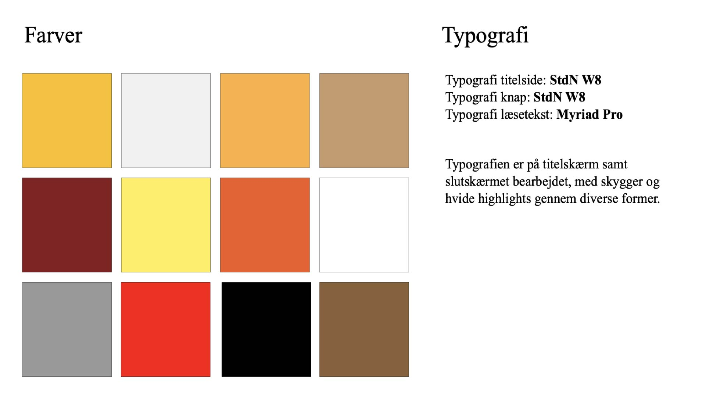
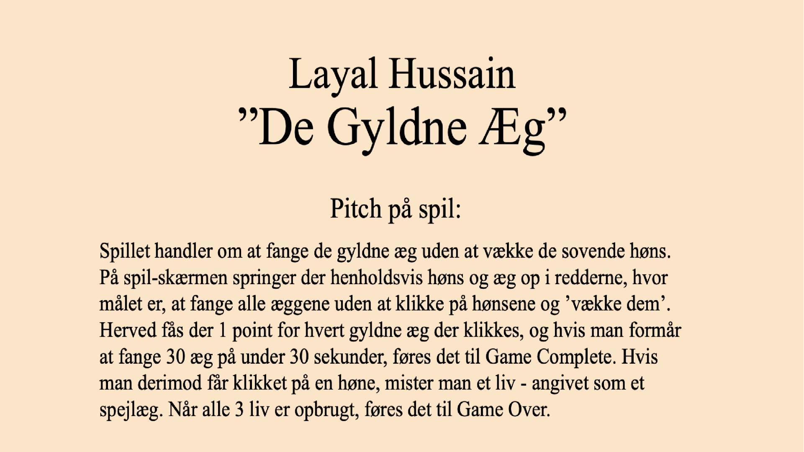
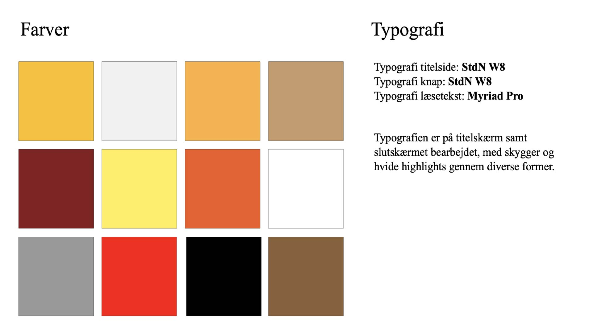
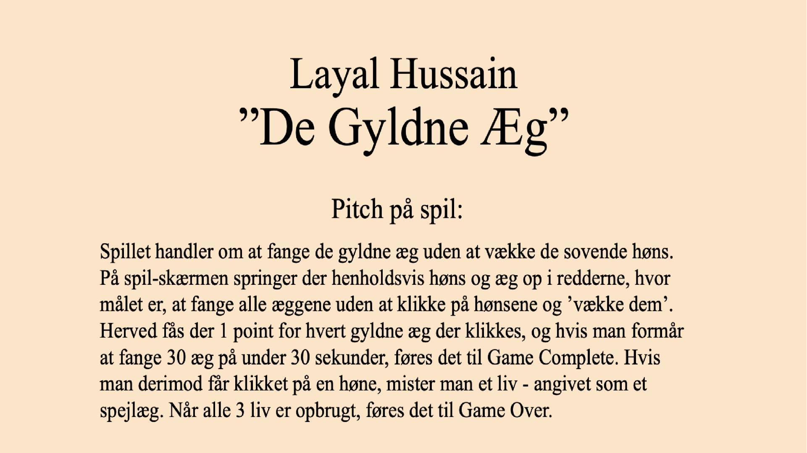

assetliste og designdokumentation
04.01.05 assetliste og designdokumentation
I denne opgave færdiggjorde jeg designet til mit spil, og rentegnede min baggrund, slutskærme samt mine UI-elementer og afleverede dem, som en komplet assetliste.
 



Under udviklingen af spillet startede jeg først ud med at brainstorme over en masse ting, som kunne være spændende at lave mit spil ud fra. Jeg blev hurtigt klar over at jeg på en eller anden måde ville inkorporere høns, da mine forældre på dette tidspunkt havde fået en speciel race høns som lagde grønne æg. Gennem en række brainstorms blev de grønne æg lavet om til guld, og for at bringe mit koncept til live lavede jeg en papir prototype, hvor jeg fik testet mit koncept i forhold til interaktion og indhold.
Ved designet af karaktere, baggrunde og ui-elementer var jeg inspireret af stilen 'Gigantic 2.0 style'. Denne stil består af enkelte farver, runde former og overordnet bløde kanter. Gennem disse former tilføjes der highlights samt skygger, hvilket giver designet et overordnet tre dimensionalt look. Dette har jeg i høj grad implementeret i designet af mine UI-elementer, samt mine karaktere. Her har jeg valgt at give hønen en stærkere line of action for at femhæve hønens personlighed gennem de mørke nedadvendte øjenbryn, samt z'erne der hører til figuren.